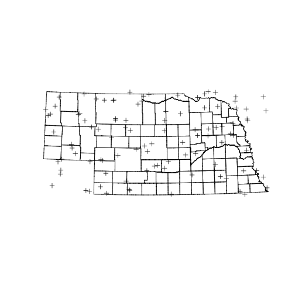

Sampling
Generate a random sample
Learning Objectives
- Explore the use of the R function
sample()
Once you have decided to use simple random sampling to choose your sites, how do you do it? There are two steps.
- Create or obtain a vector of all possible sampling units
- Use
sample()to select the units you will use.
We’ve already done the first step. So now we look at the next step, picking our random sample. The sample() function will choose a random sample of size = n with or without replacement.
# code to be executed
sampleFrame <- as.character(1:1000)
sampleIndex <- sample(sampleFrame, size = 50, replace = TRUE)
sampleIndex [1] "921" "777" "368" "862" "597" "634" "245" "73" "2" "944" "97"
[12] "576" "962" "843" "153" "103" "99" "255" "317" "228" "674" "105"
[23] "606" "861" "502" "759" "759" "267" "792" "545" "909" "758" "118"
[34] "33" "284" "212" "980" "680" "403" "351" "489" "952" "676" "324"
[45] "583" "851" "946" "702" "689" "416"
The first argument to sample() is the sampleFrame, the vector with the ID of each sample unit. The second argument size indicates the number of units to sample. The first argument describes whether the sample is drawn with replacement or not.
Challenge: Drawing random samples
Write R code to do the following tests:
- Draw two random samples of the same size from the same frame. How many units from the first sample are also in the second?
- Take a sample of size 200 with replacement set to TRUE. How many units are duplicated?
So using our data.frame of Nebraska Counties, a size of 10 and without replacement:
simple_sample <- sample(sample_frame$COUNTYNAME, size = 10, replace = FALSE)
simple_sample [1] Pierce Keith Howard Hall Cedar Wheeler
[7] Richardson Furnas Logan Holt
93 Levels: Adams Antelope Arthur Banner Blaine Boone Box Butte ... York
And there you go! What’s that? Your list of 10 is different from mine? Yes, and that is expected. Computers generate random numbers from iterative algorithms that start with a “seed” value. If you do not use the same seed then the sequence of random numbers will be different. Most of the time that’s what you want. However, if you want your calculations to be exactly reproducible you need to explicitly set the seed of the random number generator. The value you give it doesn’t matter. As long as you set the seed the sequence of random numbers that follow will be exactly the same.
sample(1:1000, size = 10) [1] 363 407 276 779 284 170 132 347 75 646
sample(1:1000, size = 10) # different [1] 470 598 912 201 948 962 785 601 232 136
set.seed(3987274)
sample(1:1000, size = 10) [1] 877 290 236 595 307 771 414 35 486 584
set.seed(3987274)
sample(1:1000, size = 10) # same! [1] 877 290 236 595 307 771 414 35 486 584
There are a few problems with our simple random sample of counties. Each county has the same probability of being selected, despite the fact that they have different areas. In effect, this means that a bit of ground in Lancaster county has a higher probability of being selected than a bit of ground in Cherry county. To get around this we need to weight the probability of choosing each county by its area. This is called a “probability proportional to size” sample. sample() has an argument called prob which takes a numeric vector. The only condition is that all the elements of this vector have to be positive.
set.seed(39858309)
sample(sample_frame$COUNTYNAME, size = 10, prob = sample_frame$area) [1] Knox Sioux Webster Cherry Dawes Cuming Frontier
[8] Custer Sheridan Arthur
93 Levels: Adams Antelope Arthur Banner Blaine Boone Box Butte ... York
Challenge:
Draw a sample that is larger than the sample frame.
There is another way we might want to sample a geographical space. It’s possible that we want to choose random points within a particular area. Each spatial polygon has a “bounding box” associated with it.
bbox(counties) min max
x 159215.36 900447.3
y 18672.44 359430.7
These have units of meters, which you can see by checking the projection information. Look for +units=m.
proj4string(counties)[1] "+proj=lcc +lat_1=40 +lat_2=43 +lat_0=39.83333333333334 +lon_0=-100 +x_0=500000 +y_0=0 +datum=NAD83 +units=m +no_defs +ellps=GRS80 +towgs84=0,0,0"
So, we can pick a random point between two values using runif(), which is a random sample from a uniform distribution.
bb <- bbox(counties)
runif(1,min=bb[1,1],max=bb[1,2])[1] 244246.5
So we can pick 100 samples in both x and y dimensions like this:
rand_points <- data.frame(x = runif(100, min=bb[1,1],max=bb[1,2]),
y = runif(100, min=bb[2,1],max=bb[2,2]))Figuring out exactly where those points are can be tricky, but to make a map we need to put the coordinates into a spatialpointsDataFrame object that has the same projection information as the counties spatialPolygonsDataFrame does.
rp <- SpatialPoints(rand_points,proj4string = CRS(proj4string(counties)))
plot(counties)
plot(rp, add=TRUE)
The problem with this simple approach is obvious. Some of the points selected are outside Nebraska because the state is not a perfect match for it’s bounding box. The function over() can help here
head(over(rp, counties)) OBJECTID FIPS_C FIPS_I FIPSST FIPSCO STPO COUNTYNAME
1 1918 31131 31131 31 131 NE Otoe
2 1919 31165 31165 31 165 NE Sioux
3 85 31101 31101 31 101 NE Keith
4 2543 31159 31159 31 159 NE Seward
5 73 31041 31041 31 041 NE Custer
6 NA <NA> NA <NA> <NA> <NA> <NA>
CNTYDISP CNTYSHORT CNTYSORT CNTYCATEGO CNTYACTIVE
1 Otoe County, Nebraska OTOE, NE NE-Otoe County Y
2 Sioux County, Nebraska SIOUX, NE NE-Sioux County Y
3 Keith County, Nebraska KEITH, NE NE-Keith County Y
4 Seward County, Nebraska SEWARD, NE NE-Seward County Y
5 Custer County, Nebraska CUSTER, NE NE-Custer County Y
6 <NA> <NA> <NA> <NA> <NA>
INDEPCITY CNTYSTAND SEATLAT SEATLONG NAD83UTM NAD83STATE NAD27STATE
1 N Y 40.67667 -95.85889 26914 32104 32006
2 N Y 42.68722 -103.88222 26913 32104 32005
3 N Y 41.12806 -101.71917 26914 32104 32006
4 N Y 40.90694 -97.09861 26914 32104 32006
5 N Y 41.40194 -99.63889 26914 32104 32006
6 <NA> <NA> NA NA NA NA NA
STATENAME CNTYSTARTD CNTYENDD LASTCHGD NOTE BOTTOM TOP_
1 Nebraska <NA> <NA> 2003/02/24 <NA> 40.52273 40.78445
2 Nebraska <NA> <NA> 2003/02/24 <NA> 42.00050 43.00171
3 Nebraska <NA> <NA> 2003/02/24 <NA> 41.00268 41.39552
4 Nebraska <NA> <NA> 2003/02/24 <NA> 40.69784 41.04687
5 Nebraska <NA> <NA> 2003/02/24 <NA> 41.04622 41.74159
6 <NA> <NA> <NA> <NA> <NA> NA NA
LEFT_ RIGHT_
1 -96.46383 -95.70997
2 -104.05315 -103.40097
3 -102.05573 -101.24996
4 -97.36851 -96.91059
5 -100.25293 -99.20326
6 NA NA
So overlaying counties onto the points gives us missing values for all the points outside of Nebraska. We can use this to filter our sample. That would leave us with less than 100 points. So instead we choose many more points than we want, and then randomly sample 100 from the ones that are inside Nebraska.
rand_points <- data.frame(x = runif(400, min=bb[1,1],max=bb[1,2]),
y = runif(400, min=bb[2,1],max=bb[2,2]))
rp <- SpatialPoints(rand_points,proj4string = CRS(proj4string(counties)))
inside <- !is.na(over(rp, counties)$OBJECTID)
rp <- rp[inside]
pick <- sample(1:length(rp), size = 100, replace = FALSE)
plot(counties)
plot(rp[pick], add=TRUE)
There’s another wrinkle here. The probability of picking any spot inside the state probably changes from east to west and south to north because the earth is a sphere. How much this matters probably depends on the projection in use as well as the extent over which the sample is being taken.
Challenge: Picking random points
Picking random points can work with any size polygon. Choose 10 random points from inside Cherry county.
Hint: start by pulling the Cherry county polygon out of
counties, which can be subsetted like a dataframe.